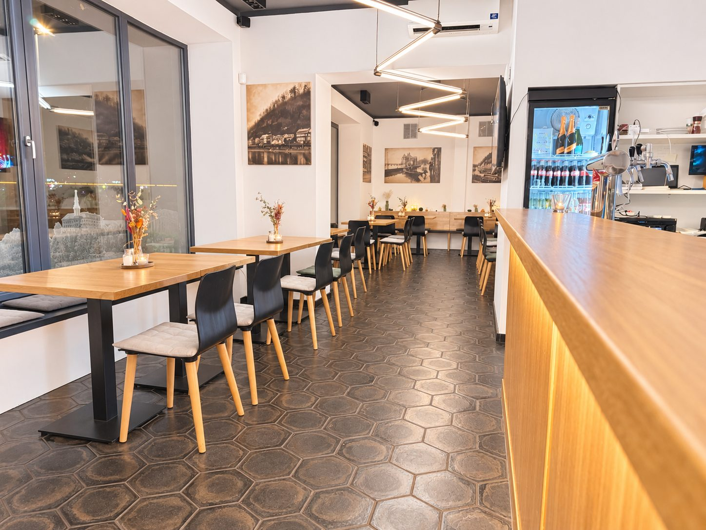
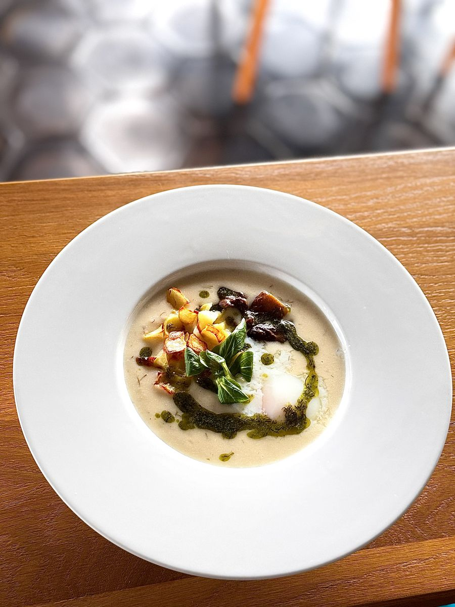
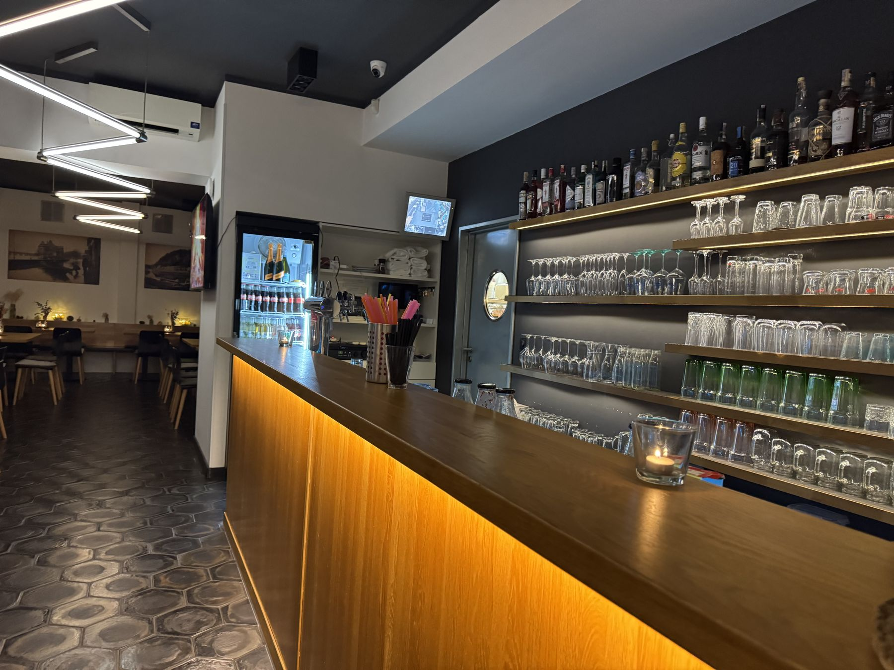

Kulinarisches Erlebnis mit Blick auf das Schloss Děčín
Das Restaurant im Erdgeschoss der Pension Via Ferrata am Elbufer. Wir kochen hervorragend und vor allem ehrlich.
Über uns
Hervorragend und vor allem ehrlich gekocht
Wir sind ein Familienrestaurant und das Schwesterunternehmen der Pension Via Ferrata. Wir kochen so, wie wir selbst gern essen: ordentliche Portionen, verlässlicher Geschmack und keine Abkürzungen.
Kommen Sie zum Mittagsmenü, zum Abendessen mit Freunden oder auf einen Kaffee auf der Terrasse. Über Ihnen klettern Kletterer am Klettersteig, und über die Elbe blicken Sie auf das Schloss Děčín.


Terrasse unter dem Felsen
Von der Terrasse aus sehen Sie die Kletterer am Klettersteig direkt über sich. Im Sommer der schönste Platz in Děčín.

Blick aufs Schloss
Drinnen wie draußen haben Sie die Elbe und das Schloss Děčín vor sich. Ein ruhiger Ort für gute Gespräche.

Frühstück für Pensionsgäste
Gäste der Pension Via Ferrata frühstücken bei uns täglich von 8:00 bis 10:00 Uhr.





Raumvermietung
Das ganze Restaurant nur für Ihre Feier
Geburtstag, Firmenfeier oder Familientreffen. Mieten Sie die gesamten Räume samt Terrasse, um Essen und Getränke kümmern wir uns.
40 Gäste drinnen · plus Terrasse
- Geburtstage und Jubiläen
- Firmenveranstaltungen
- Familienfeiern
- Taufen und Hochzeiten

Bewertungen
Was unsere Gäste sagen
„Die gebratene Ente hat mir sehr geschmeckt, ausgezeichnet. Ich kann es allen empfehlen, ein toller Ort, an dem man sich hervorragend um die Gäste kümmert.“
Google, vor einem Monat · übersetzt
„Eine traumhafte Aussicht, für die es sich lohnt, hier zu sitzen. Die Preise sind für die Lage angemessen, das Essen ausgezeichnet. Kulajda, Pasta und Burger. Kaffee wie in Italien.“
Google, vor 3 Monaten · übersetzt
„Wir sind spontan hier eingekehrt und fanden es sehr schön. Das Essen war köstlich und unsere Kellnerin sehr freundlich und hilfsbereit. Wir empfehlen es weiter.“
Google, vor 4 Monaten · übersetzt
Kontakt
Wir freuen uns auf Sie
- AdresseLabské nábřeží 317/19, 405 02 Děčín 2
- Telefon+420 793 325 970
- E-Mailrestaurace@penzionferrata.cz
- ParkenKostenlose Parkplätze an der Straße
Öffnungszeiten
| Montag | 11:30–22:00 |
| Dienstag | 11:30–22:00 |
| Mittwoch | 11:30–22:00 |
| Donnerstag | 11:30–22:00 |
| Freitag | 11:30–22:00 |
| Samstag | 11:30–22:00 |
| Sonntag | 11:30–22:00 |
Frühstück nur für Pensionsgäste, täglich 8:00–10:00 Uhr.